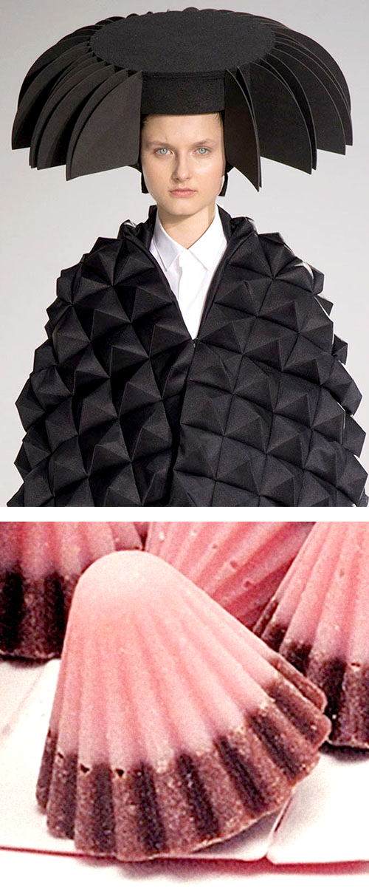
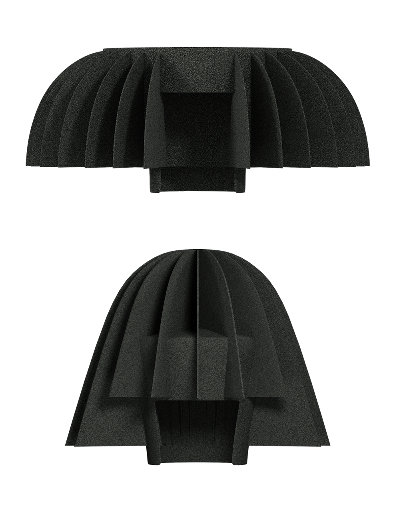

Tomihiro Kono / 3D Head Props
AR. Beauty. Fashion (2020)
A collaboration with Tomhiro Kono — the Tokyo-based hairstylist and wig-maker — to interpret his archival head props into an AR filter. Modelled in 3D were two styles that Tomihiro had originally created for Junya Watanabe AW15. Interactive Apollo chocolates were embedded for a hint of nostalgia.
3D and AR production / Helena Dong
▚ Try 3D Head Props
AR. Beauty. Fashion (2020)
A collaboration with Tomhiro Kono — the Tokyo-based hairstylist and wig-maker — to interpret his archival head props into an AR filter. Modelled in 3D were two styles that Tomihiro had originally created for Junya Watanabe AW15. Interactive Apollo chocolates were embedded for a hint of nostalgia.
3D and AR production / Helena Dong
▚ Try 3D Head Props

Thumbnail 1 / Junya Watanabe AW15, Yannis Vlamos
Thumbnail 2 / Apollo strawberry chocolates